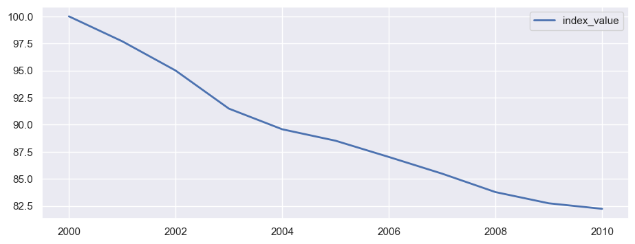
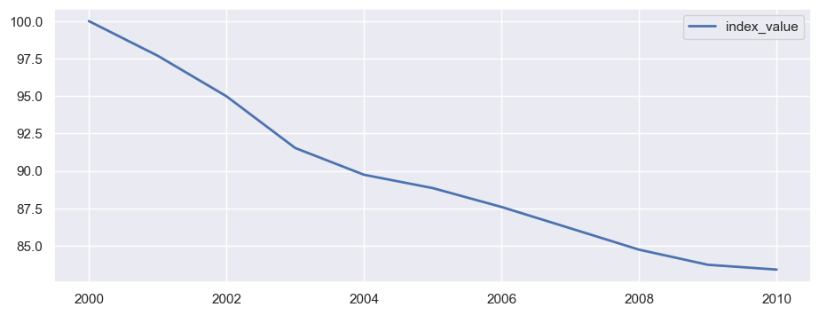

import pandas as pd
import numpy as np
from PriceIndexCalc.pandas_modules.index_methods import bilateral_methodsAizcorbe (2014), ex 2.1. Bilateral fixed-base and chained indices
bilateral index methods
fixed-base indices
chained indices
Overview
This notebook goes through a fixed-base and chained bilateral indices methods demonstrated by Aizcorbe (2014) in 2.1. This this example Ana Aizcorbe uses US National Income and Product Accounts data from the BEA to demonstrate how the Laspeyres, Paasche, and Fisher behave differently when you use a fixed base versus when they are chained.
#if not run before, use the helper to clean the data and make it analysis ready
from src.nipa_helper import clean_nipa_data
clean_nipa_data()--------------------------------------------------------------------------- ModuleNotFoundError Traceback (most recent call last) Cell In[82], line 2 1 #if not run before, use the helper to clean the data and make it analysis ready ----> 2 from src.nipa_helper import clean_nipa_data 4 clean_nipa_data() ModuleNotFoundError: No module named 'src'
Explore the data
While the raw data is a tad hard to work with (and looks awkward in Table 2.3), this data is provided in cleaned csv format in the data\bronze folder
df = pd.read_csv("../data/silver/NIPA_ard.csv")
df.head()| Unnamed: 0 | Years | id | quantity | price | |
|---|---|---|---|---|---|
| 0 | 0 | 2000 | Motor Vehicles and Parts | 363.2 | 102.00 |
| 1 | 1 | 2001 | Motor Vehicles and Parts | 383.3 | 102.40 |
| 2 | 2 | 2002 | Motor Vehicles and Parts | 401.3 | 101.86 |
| 3 | 3 | 2003 | Motor Vehicles and Parts | 401.0 | 99.08 |
| 4 | 4 | 2004 | Motor Vehicles and Parts | 403.9 | 98.40 |
Try the base bilateral indices
bilateral_methods(
df_merged,
price_col='index',
quantity_col='spending',
product_id_col='product_name',
date_col='Years',
method='fisher',
plot=True
)| index_value | |
|---|---|
| 2000 | 1.000000 |
| 2001 | 0.976995 |
| 2002 | 0.950021 |
| 2003 | 0.914880 |
| 2004 | 0.895824 |
| 2005 | 0.885266 |
| 2006 | 0.870273 |
| 2007 | 0.854862 |
| 2008 | 0.837859 |
| 2009 | 0.827529 |
| 2010 | 0.822435 |

try the Laspeyres
bilateral_methods(
df_merged,
price_col='index',
quantity_col='spending',
product_id_col='product_name',
date_col='Years',
method='laspeyres',
plot=True
)| index_value | |
|---|---|
| 2000 | 1.000000 |
| 2001 | 0.976905 |
| 2002 | 0.949844 |
| 2003 | 0.915297 |
| 2004 | 0.897443 |
| 2005 | 0.888531 |
| 2006 | 0.875934 |
| 2007 | 0.861710 |
| 2008 | 0.847423 |
| 2009 | 0.837340 |
| 2010 | 0.834129 |
